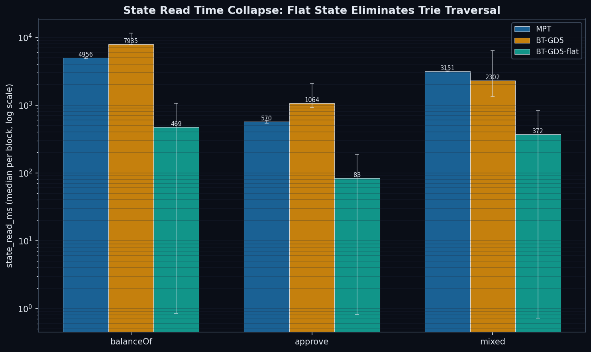
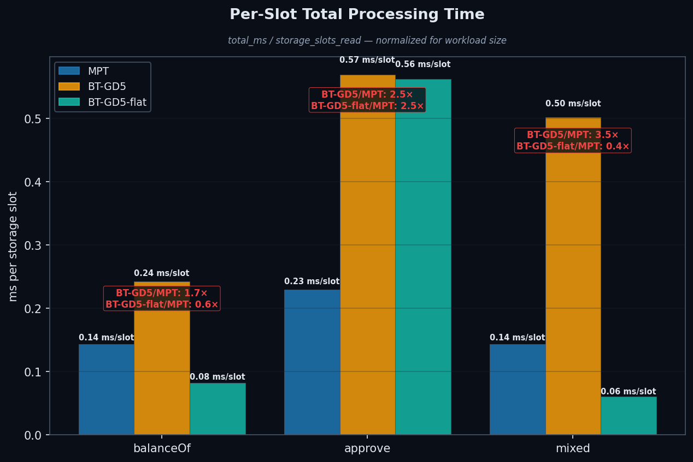
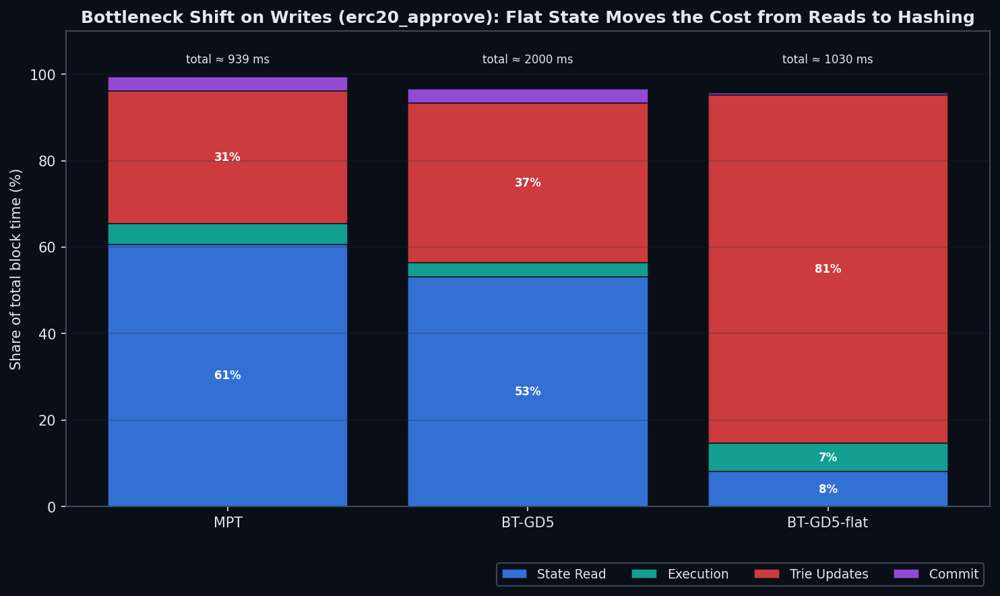
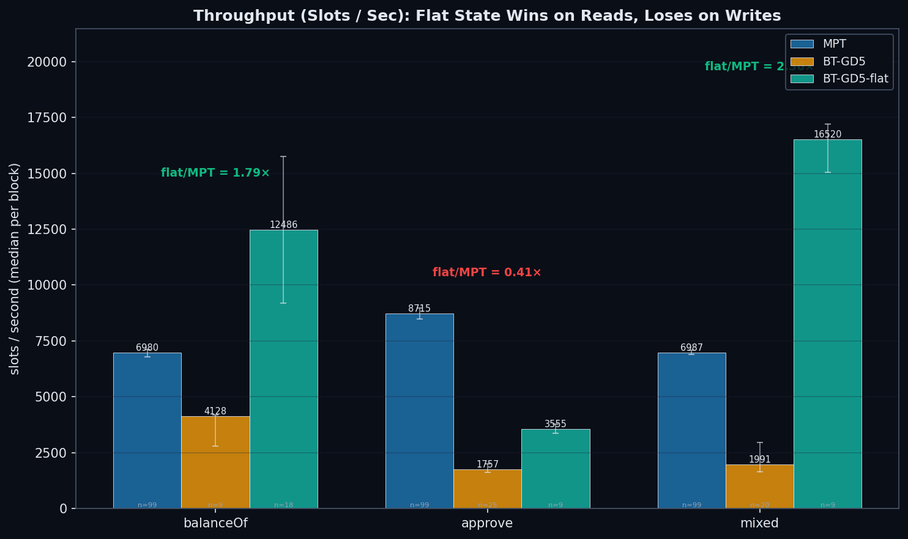
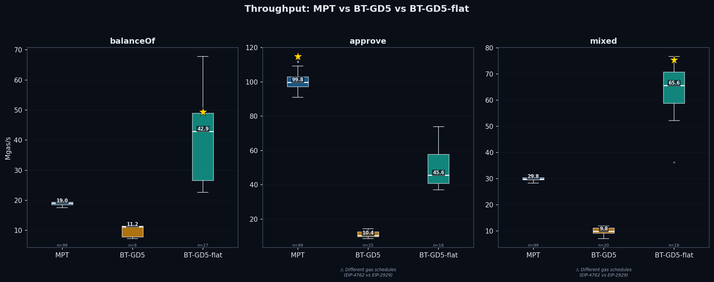
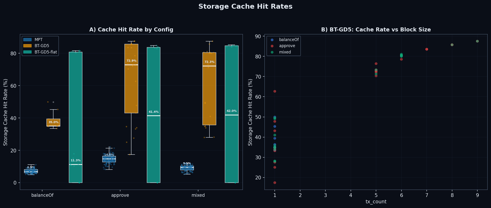
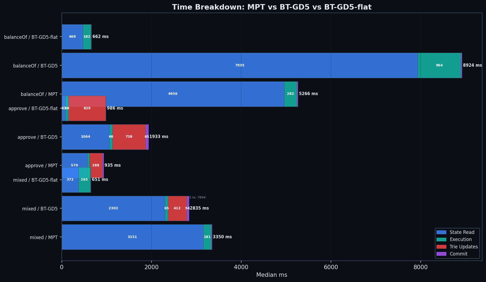

Three-way comparison: MPT vs Binary Trie (group-depth 5) vs Binary Trie + Flat State. Same hardware as Part 2 — bintrie-flat is 1.8–2.4× faster than MPT for reads.
erc20_approve end-to-end (median +10%, not significant) while resolving ~2.4× fewer slots/sec there. The remaining gap is now concentrated in trie_updates (root recomputation), not slot resolution.
This is a follow-up to Part 2 (MPT vs BT-GD5). Same hardware, same workloads, same cold-cache protocol. The new variable: bt-gd5-flat — bintrie group-depth 5 with flat-state stem blobs enabled.
In Part 2, BT-GD5 was ~1.7× slower than MPT on reads per storage slot. The dominant cost was state_read_ms — without a flat layer, every storage slot was resolved by walking the binary trie.
Flat state changes this. Each SLOAD becomes a single Pebble read of a packed stem blob keyed by "vX" + stem(31 bytes), followed by an in-memory bitmap+offset extraction. This puts bintrie's storage reads on the same footing as MPT, whose SLOADs are already served by its flat snapshot in ~1 read (the trie is not walked for reads — see §S3).
The result, in three numbers — read latency (median state_read_ms / storage_slots_read, lower is better):
| Benchmark | MPT | BT-GD5 | BT-GD5-flat | flat vs MPT |
|---|---|---|---|---|
| balanceof | 135 | 216 | 55 | 2.5× faster |
| mixed | 135 | 334 | 35 | 3.8× faster |
| approve | 139 | 364 | 46 | 3.0× faster |
Throughput — all phases combined, slots resolved per second of wall-clock time:
| Benchmark | MPT slots/s | BT-GD5 slots/s | BT-GD5-flat slots/s | flat vs MPT |
|---|---|---|---|---|
| balanceof | 6,980 | 4,128 | 12,486 | 1.8× faster |
| mixed | 6,987 | 1,991 | 16,520 | 2.4× faster |
| approve | 8,715 | 1,757 | 3,555 | 0.4× (slower) |
approve on purpose. Read latency is the cost of resolving a single slot; throughput is the rate at which whole blocks finish, including trie_updates and commit. For read-heavy workloads they point the same way. For approve, BT-GD5-flat reads each slot ~3× faster than MPT but spends ~80% of its block time in trie_updates (vs 31% for MPT), so it resolves ~2.4× fewer slots/sec despite faster reads. End-to-end, approve's per-block wall-clock is only ~10% above MPT and not statistically significant (§S6) because EIP-7825 makes flat's blocks smaller; the honest write comparison is the per-slot/throughput one. §S4 unpacks the phase shift.
Position: Flat state is the single biggest improvement to bintrie read performance demonstrated to date — it removes bintrie's structural read penalty and brings it to parity with (and, at this database size, ahead of) MPT. The remaining gap is concentrated in one phase (trie_updates) rather than distributed across the read path.
Refer to Part 2 for the full setup. Only what changed in Part 3:
bt-gd5-flat added (binary + DB + state-actor flat-state metadata).--cache 0, OS page cache dropped between every run, --debug.logslowblock=0 to capture per-block timing JSON, ~100M gas target per block.analysis_results.json and the graphs). Means per block run 10–35% higher for the bintrie configs because of the long tail from EIP-7825 fragmentation. One asymmetry to keep in mind: only the bintrie-flat branch activates Osaka (EIP-7825), so its 100M-gas benchmark fragments into ~6 transactions across 2–3 smaller blocks while MPT and BT-GD5 run a single block. Per-slot metrics normalize the slot count, not the block shape (§S6).
| Parameter | Value |
|---|---|
| Machine | Bare metal — AMD EPYC 9454P 48-Core (96 threads), 126 GB RAM, 3.5 TB SSD (md RAID), Ubuntu 24.04 LTS (same as Part 2) |
| Databases | MPT: 1.6 TB, BT-GD5: 1.4 TB, BT-GD5-flat: 507 GB |
| Configurations | mpt, bt-gd5, bt-gd5-flat |
| Protocol | Cold cache (OS page cache dropped + --cache 0 between runs) |
| Runs | MPT: 100 per benchmark, BT-GD5: 10, BT-GD5-flat: 10 |
| Gas target | 100M gas per block |
| Benchmarks | erc20_balanceof (reads), erc20_approve (writes), mixed_sload_sstore (mixed) |
The most striking result is the median state_read_ms per block:

For erc20_balanceof, BT-GD5 spends 7,935 ms reading state per block; BT-GD5-flat spends 469 ms. Per slot, that is a 3.9× read-latency reduction (216 → 55 µs/slot). The per-block ratio looks larger (16.9×), but roughly 3× of that is just flat's smaller EIP-7825 blocks — per-block totals are not comparable across configs (§S6), so the per-slot number is the honest one. MPT spends 4,956 ms (135 µs/slot).
Per-slot total time (total_ms / storage_slots_read, median) tells the same story for read-heavy work — and shows the write penalty for approve:

| Benchmark | MPT | BT-GD5 | BT-GD5-flat |
|---|---|---|---|
| balanceof | 143 µs/slot | 242 µs/slot | 83 µs/slot |
| mixed | 143 µs/slot | 502 µs/slot | 61 µs/slot |
| approve | 230 µs/slot | 569 µs/slot | 563 µs/slot |
For approve, BT-GD5-flat's per-slot total time (563 µs) is essentially tied with non-flat BT-GD5 (569 µs) even though its reads are 3× faster — the cost has moved entirely into trie_updates (§S4).
Mechanism. The three configs resolve a cold SLOAD differently:
| Config | Per-SLOAD read path (cold cache) | Disk reads per slot |
|---|---|---|
| MPT | Leaf served from the flat snapshot (snapStorage); the trie is not walked for reads |
~1 |
| BT-GD5 (no flat) | No flat layer → binary-trie traversal; upper group nodes amortize in-memory within a block, so the marginal cost is a few node reads, not the full ~50-node logical path to the stem | a few |
| BT-GD5-flat | Single Pebble lookup at "vX" + stem(31 bytes) → packed (bitmap, values) blob → in-memory offset extraction |
~1 |
So MPT and BT-GD5-flat both resolve a storage leaf in ~1 flat read; the flat-state win over MPT is not a “fewer reads” effect. Per cold disk read the two are statistically indistinguishable (median ms_per_cache_miss on balanceof: MPT 146 µs vs flat 135 µs, p = 1.0). Flat-state's lower state_read_ms/slot comes from two things, both flagged as partial confounders in §S6:
stateReaderWithCache prefetcher wins more races when reads are fast, so flat does ~0.4 disk reads/slot vs MPT's ~0.9 on balanceof.The structural takeaway is the robust one: without flat state bintrie is ~1.6× slower than MPT on reads; with it, bintrie reaches MPT-snapshot parity and, at this DB size and prefetch regime, pulls ahead by 2.5–3.8×.
The numbers above are medians across all benchmark blocks. Single-transaction blocks (the cleanest cold comparison) give a tighter ratio:
| Block shape | µs/slot read latency | Notes |
|---|---|---|
| MPT, single-tx | 135 | Leaf from the flat snapshot, ~1 read on a 1.6 TB LSM |
| BT-GD5-flat, single-tx | 77 | One stem-blob read on a 507 GB LSM |
| BT-GD5-flat, multi-tx | ~39 | Prefetcher goroutine warms the per-block shared cache for later transactions; the main processor's time.Since(start) increasingly measures cache-hit fast paths, not disk reads |
Single-tx vs single-tx is the size-and-shape-controlled comparison: ~1.8× faster reads (135 vs 77 µs/slot), versus the 2.5× balanceof median. The difference is the prefetcher race: multi-tx blocks let the prefetcher goroutine warm the per-block shared cache, so the win grows with more transactions. Both are real measurements at the same state_object.go boundary. The stateReaderWithCache race is the same one documented in Part 2's CACHE_ANALYSIS.md.
For erc20_approve, the read-cost saving is real (12.8× faster state_read: 1,064 → 83 ms median) but the bottleneck shifts:

| Phase | BT-GD5 | BT-GD5-flat | Change |
|---|---|---|---|
| state_read | 1,064 ms (53%) | 83 ms (8%) | 12.8× faster |
| trie_updates | 738 ms (37%) | 829 ms (81%) | 1.1× slower |
| total | 2,000 ms | 1,030 ms | 1.9× faster |
Total time still nearly halves vs BT-GD5, but trie_updates now dominates. Compared to MPT (trie_updates = 288 ms, 31% of approve), bintrie-flat's 829 ms is 2.9× higher — and per slot written, the gap is ~6.75× (bootstrap CI 6.3–7.4×). That's the residual gap.
Flat state flattens leaf reads, but root recomputation needs the intermediate nodes along every modified path — and those are not in the flat layer, so they are read (cold) from the trie and rehashed. The binary trie is far deeper than MPT's hex trie (~248 bit-levels, ≈50 group nodes per stem at groupDepth=5, versus ~5–7 hex levels), so each modified slot pulls roughly an order of magnitude more intermediate nodes through the read-and-hash path. The measured ~6.75×/slot hashing cost is the consequence. Flat state changes how leaves resolve, not how roots recompute.

For read-heavy workloads, bintrie-flat is the clear winner:
The block-time distribution is also tighter under flat state (CV ≈ 7%, vs ≈ 20% for BT-GD5 on read-heavy benchmarks) — the throughput boxplots show much smaller variance for the bt-gd5-flat config:

MPT's SLOADs are served by its flat snapshot (~1 read) and bintrie-flat's by the stem blob (~1 read); per cold disk read the two are statistically indistinguishable (balanceof ms_per_cache_miss: 146 vs 135 µs, p = 1.0, and on approve/mixed flat is actually higher per miss). So the read headline is not a “1 vs 5 reads” structural win — it is driven by (a) flat taking fewer disk trips per slot (blob packing + prefetcher race) and (b) the database-size asymmetry below. The structural claim that survives is parity-plus: flat removes bintrie's traversal penalty.
BT-GD5-flat is 507 GB; MPT 1.6 TB; BT-GD5 1.4 TB. This ~3× gap is mostly a generation-target choice (the flat DB was built to a 500 GB target vs ~1.2 TB for the others), not an intrinsic flat-state property — though flat blobs are genuinely more compact than per-slot snapshot entries. A same-size re-run is the single most important follow-up; until then, treat the 2.5–3.8× read multiple as an upper bound and the ~1.8× single-tx number as the size-and-shape-controlled estimate.
MPT runs EIP-2929 (Prague) gas; the bintrie configs run EIP-4762 (Osaka). Despite that, the measured gas_per_slot is within 0.2% across MPT and BT-GD5-flat for every benchmark (≈2,722 gas/read-slot on balanceof, ≈22.9k gas/written-slot on approve), so “100M gas” buys the same slot count and the per-slot comparison is not distorted by the schedule.
Only the bintrie-flat branch activates Osaka, so its 100M-gas benchmark splits into ~6 transactions across 2–3 smaller blocks while MPT and BT-GD5 run a single block. Per-slot metrics normalize the slot count, but the multi-tx shape also feeds the prefetcher race (above) and is why per-block totals (e.g. the 16.9× read-collapse) are not directly comparable.
The bintrie binaries' storage_slots_written counter is unreliable: BT-GD5 reports 0 written slots on approve even though its 738 ms trie_updates time proves writes occurred. Read-heavy throughput is unaffected (writes ≈ 0 there for all configs) and the flat-vs-MPT approve throughput is valid (both count writes), but BT-GD5's approve throughput is read-only, so “flat is ~2× faster than BT-GD5 on approve” is a lower bound.
MPT has 99 analyzed runs per benchmark; BT-GD5 and BT-GD5-flat have 9 each (yielding 18–27 EIP-7825 blocks). Inference therefore rests on ~9 independent runs for the bintrie configs; the per-block Mann-Whitney/bootstrap n overstates independence (within-run blocks are correlated), so we also report the per-run Welch test. All read-path differences are significant across all three tests. The end-to-end approve total-time difference (flat vs MPT) is NOT significant (Mann-Whitney p = 1.0, bootstrap ratio CI [0.01, 2.44]) — flat and MPT finish approve blocks in statistically indistinguishable wall-clock time. Variance (CV%): MPT ≈ 2–5%, bt-gd5-flat ≈ 7%, BT-GD5 up to ≈ 21% on read-heavy benchmarks.
Median per-block storage cache hit rates: MPT 7–15%, BT-GD5 35–73%, BT-GD5-flat 11–42% — note BT-GD5, not flat, shows the highest medians. All bintrie configs run elevated versus MPT because of the same stateReaderWithCache prefetcher race (Part 2's CACHE_ANALYSIS). The wall-clock total_ms and state_read_ms already incorporate the prefetch benefit and are the authoritative metrics.

trie_updates is the remaining bottleneck for write-heavy workloads. Three viable optimization paths:
Parallel hashing across more depth levels. PR #34032 already parallelizes shallow InternalNode.Hash calls. Extending this deeper trades CPU cores for hash latency.
Incremental hashing with cached subtree roots. Track which subtrees changed in a block and rehash only those, caching subtree roots in memory between blocks. (Bounded for keccak-scattered writes, which rarely share dirty subtrees — helps most for hot/co-located stems.)
GC-free arena (PR #34055, still open). Reduces GC pressure during commit, helps tail latency.
trie_updates overhead be amortized down to the MPT range?” This is all about full-node read latency — flat state does nothing for witness generation, proof sizes, or stateless verification, which still derive from the trie nodes and are the broader motivation for EIP-7864. Part 4 will probably look at the write path.

| Benchmark | Config | total_ms | state_read | trie_updates | execution | commit | slots/block |
|---|---|---|---|---|---|---|---|
| erc20_balanceof | MPT | 5,264 | 4,956 (94%) | 0 | 282 | 28 | 36,742 |
| BT-GD5 | 8,901 | 7,935 (89%) | 0 | 964 | 25 | 36,741 | |
| BT-GD5-flat | 658 | 469 (71%) | 2 | 182 | 9 | 6,114 | |
| mixed_sload_sstore | MPT | 3,352 | 3,151 (94%) | 0 | 181 | 18 | 23,418 |
| BT-GD5 | 3,470 | 2,302 (66%) | 412 | 65 | 56 | 5,556 | |
| BT-GD5-flat | 660 | 372 (56%) | 3 | 265 | 10 | 11,691 | |
| erc20_approve | MPT | 939 | 570 (61%) | 288 | 45 | 31 | 8,188 |
| BT-GD5 | 2,000 | 1,064 (53%) | 738 | 66 | 65 | 4,094 | |
| BT-GD5-flat | 1,030 | 83 (8%) | 829 (81%) | 68 | 6 | 4,086 |
Tables show medians per block (matching the companion analysis_results.json, which also carries the Mann-Whitney U / bootstrap-CI hypothesis tests — robust to the long tails from EIP-7825 multi-block fragmentation). Means per block run 10–35% higher for the bintrie configs; raw per-block CSVs are in data/. Throughput (§S1/§S5) is the median of per-block slots/s; because block sizes vary under EIP-7825, it is not this table's slots/block ÷ total_ms.
mixed_sload_sstore. This workload is ~90% reads / 10% writes (not an even split). In these runs the write fraction committed almost no storage slots for MPT and BT-GD5-flat (trie_updates ≈ 0; storage_slots_written ≈ 0), so for those configs it behaves as a second read-heavy workload — which is why flat's throughput on mixed is its highest. BT-GD5 is the outlier (trie_updates ≈ 412 ms): a plausible explanation is that Osaka system-contract state (touched each block) is resolved through the trie rather than the flat layer for the bintrie configs, but we have not isolated this and treat it as a hypothesis.